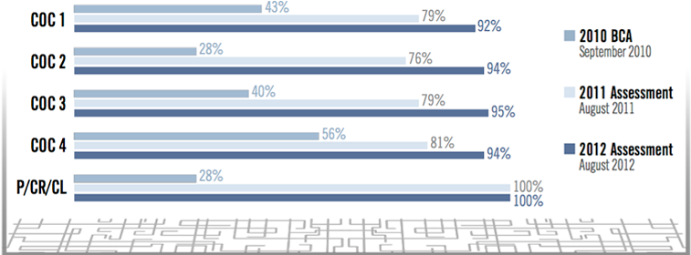
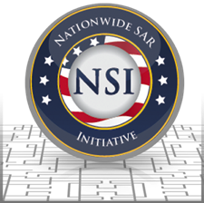
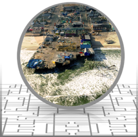

Information Sharing Environment
2013 Annual Report to the Congress
NATIONAL SECURITY THROUGH RESPONSIBLE INFORMATION SHARING
NATIONAL SECURITY THROUGH RESPONSIBLE INFORMATION SHARING
This section addresses the maturation of foundational ISE mission processes, including progress made on existing information sharing procedures between the federal, state, local, tribal, and territorial governments, private-sector, and foreign partners and allies. Many of these activities were called out in the 2007 National Strategy for Information Sharing, which remains in effect and continues to guide ISE activities.
This section also examines new and emerging information sharing initiatives in both traditional terrorism and homeland security missions, and other missions that collect and maintain data to support traditional ISE mission processes. Many of these activities are identified as priorities in the National Strategy for Information Sharing and Safeguarding (National Strategy), or have been the focus of recent reporting by the GAO. Where this is the case, it is noted in this section.
The following list of findings highlights both accomplishments and opportunities for additional improvement. Further detail is provided in the pages that follow.
The Administration released three national-level policy directives that reinforce the importance of information sharing with private-sector critical infrastructure owners and operators, and that boost security and resiliency as a national priority;
NCTC, DHS, and the FBI established the Joint Counterterrorism Assessment Team (JCAT) as the successor organization to the Interagency Threat Assessment and Coordination Group (ITACG);
The FBI added the National Palm Print System (NPPS) and Enhanced Latent Functionality to its Next Generation Identification System (NGI). With its deployment, NGI users immediately benefited from accuracy three times greater than that of pre-deployment levels;
DHS established the Field Analytic Support Task Force (FAST) to advocate for state, local, tribal, and territorial (SLTT) government agencies' intelligence requirements, and to collaborate with federal agencies to share intelligence products with SLTT government partners;
DHS Office of Intelligence and Analysis (I&A) hosted the first exercise under the Fusion Center Performance Program (FCPP), a performance management framework designed to measure the impact and value of individual fusion centers and the National Network of Fusion Centers;
DHS migrated the Homeland Security Information Network (HSIN) and its Critical Infrastructure Community of Interest to a new platform in order to improve private-sector partners access to sensitive but unclassified information;
The International Association of Chiefs of Police (IACP) and the PM-ISE are sponsoring a Unified Message Task Team (UMTT) to enhance Suspicious Activity Reporting (SAR) training, metrics, and policies;
The Global Justice Sharing Initiative (Global) put out a call to action challenging governors, sheriffs, chiefs of police, and other Global Advisory Committee (GAC)[13]members to adopt strategic solutions to transform the nation's justice and public safety information sharing activities—the tenets of which are being used to build state and regional information sharing environments; and
The office of the PM-ISE is working closely with the U.S. Chief Technology Officer (CTO) and the Council on Women and Girls to support efforts to utilize innovative technology and advanced intelligence analysis to better target criminal investigations of human traffickers.
Resource constraints, especially among SLTT law enforcement agencies, have necessitated the transformation of information sharing business models. A significant cost savings could be realized through consolidation, regionalization, and reuse of open standards and trusted IT platforms. The Global call to action to SLTT partners and the PM-ISE-sponsored nationwide deconfliction strategy are seeking to address this.
Many of the challenges noted in last year's report with respect to information sharing between the Federal Government and private-sector owner/operators of critical infrastructure persist, but there has been a concerted effort on the part of the Federal Government over the past twelve months to address the findings of the National Infrastructure Advisory Council (NIAC). Details of these activities are included in this section of the Report, under the heading, "Private Sector Information Sharing."
Gaps continue in information sharing with tribal law enforcement agencies. This year the office of the PM-ISE, in coordination with the Department of the Interior (DOI), DOI's Bureau of Indian Affairs (BIA), the Department of Justice (DOJ), DOJ's Office of Tribal Justice (OTJ), NCTC, the FBI, DHS, and the IACP convened the Tribal Information Sharing Working Group (TISW), which identified eight major findings that hinder tribal information sharing, and subsequently has developed recommendations for improvement.
The 2013 PM-ISE report, "Improving Suspicious Activity Reporting (SAR) Analysis," finds there are opportunities to further integrate SAR information into federal, state, and local intelligence analytic processes. PM-ISE is working with the ISA IPC SAR Subcommittee to address the findings and recommendations in the report.
Federal Operation Centers need to adopt a common Request for Information (RFI) exchange process, and develop a common Alerts, Warnings, and Notifications (AWN) information exchange process, as well as information exchange protocols.
The tactical edge of counterterrorism within the U.S. homeland remains the FBI's JTTF—a small cell of highly trained, locally based, committed investigators, analysts, linguists, SWAT experts, and other specialists drawn from federal, state, local, and tribal law enforcement and intelligence organizations.
The first JTTF was established in New York City in 1980, but the years since 9/11 have seen a dramatic growth in the numbers and capabilities of JTTFs. Today, the JTTFs in 103 cities include more than 4,200 members—more than four times the pre-9/11 total—hailing from nearly 600 state and local agencies and 50 federal agencies, most notably including the DHS, the U.S. military, Immigration and Customs Enforcement (ICE), and the Transportation Security Administration (TSA).
JTTFs are a major counterterrorism asset as a result of the collaborative work, pooled knowledge, and specialized capabilities of their varied membership. They demonstrate the value that results from an environment in which information is shared freely, and in which action is supported by information drawn together from many sources.
Located in states and major urban areas throughout the country, fusion centers empower front-line law enforcement, public safety, fire service, emergency response, public health, critical infrastructure protection owners and operators, and private-sector security personnel to understand local implications of national intelligence findings, enabling local officials to better protect their communities. As of March 2013, 78 designated state and major urban area fusion centers make up the National Network of Fusion Centers (National Network). Agency responses to the 2013 ISE Performance Assessment Questionnaire (ISE PAQ)[14]indicate that 57% of federal agencies participate in the National Network; and that 68% incorporate fusion center information into their own products and services.
In accordance with national strategies and policy, the Federal Government has formalized processes for guiding support to fusion centers and evaluating their capabilities.[15] In particular, DHS, in collaboration with fusion center directors and federal partners, has instituted a repeatable annual assessment process[16] to measure the progress made by the National Network in maturing state and local intelligence processes and analytic capabilities.[ii]This assessment aims to objectively evaluate information sharing by fusion centers and the National Network as a whole, while simultaneously providing valuable feedback on support provided by the Federal Government to help further develop and sustain the network.
Terrorist Screening Center(TSC)The TSC reported that in a three"month period ending in August 2012 there were 214 cases of actionable or investigative intelligence developed and 60 new service requests generated through information provided by fusion centers to the TSC. By October 2012, there were 489 cases of actionable or investigative intelligence developed and 152 requests generated through information provided by fusion centers to the TSC. |
Progress has increased steadily since 2010. As of 2012, 97% of fusion centers identified counterterrorism as a core mission focus; 96% indicate that they apply an all-crimes approach; and 70% indicate they apply an all-hazards approach.[17] In addition, as detailed in [iii]and more than 92% of fusion centers have documented and approved plans, policies, or standard operating procedures for the four identified Critical Operational Capabilities (COC).[iv]

Figure 1. Continued Progress in Enhancing the Critical Operational Capabilities of the National Network of Fusion Centers.
To assist fusion centers in fully achieving and maintaining the four COC, DHS I&A has deployed more than 90 personnel, including Intelligence Officers and Regional Directors, to the field. I&A has worked aggressively to deploy the Homeland Secure Data Network (HSDN) to more than 65 fusion centers, [v]enhancing information sharing at the SECRET level. In addition, the FBI strategy for fusion center engagement has resulted in 90 FBI personnel deployed to fusion centers and FBINet connectivity in approximately 45 of them.[vi]DHS also established a maturity model for the National Network as part of the assessment program. This model identifies four stages—fundamental, emerging, enhanced, and mature—through which the National Network will progress as it moves towards full capability and operational integration as a unified system. As of February 2013, the National Network is in the second stage of the maturity model, with ongoing efforts to build and achieve full capacity.[vii]
In line with the recommendations in the recently released report, Information Sharing: Agencies Could Better Coordinate to Reduce Overlap in Field-Based Activities (GAO-13-471), DHS continues to emphasize the importance of ongoing coordination and collaboration between fusion centers; FBI Field Intelligence Groups (FIGs); the High Intensity Drug Trafficking Areas (HIDTA) Program's Investigative Support Centers (ISC); the Regional Information Sharing Systems (RISS) Program's Centers; and major city and county intelligence units to support implementation of the statewide fusion process. To support these coordination efforts, DHS has sponsored 19 analytic exchanges between analysts from fusion centers, HIDTA ISCs, city and county intelligence units, and RISS centers since January 2012. The analytic exchanges promoted collaboration between analysts to share information, including state and local Requests for Information (RFI). Furthermore, the exchanges provided an opportunity to increase the quality of analytic products.[viii]
On March 15, 2012, the National Fusion Liaison Officer (FLO) Program convened a workshop to facilitate the sharing of best practices and lessons learned between FLOs[18]across the National Network. The workshop provided opportunities for facilitated discussion on ways to implement a bottom-up approach to standardize liaison officer programs across the National Network. The workshop findings included a recommendation that FLO program coordinators conduct regular conference calls, the first of which occurred on January 24, 2013. This national conference call was established to discuss current trends, best practices, and lessons learned from FLO programs across the National Network. This coordination not only improves communications between FLO program coordinators, but also provides opportunities to discuss common and consistent approaches to the operation of FLO programs.[ix]
Fusion centers develop, implement, and enforce P/CR/CL safeguards to protect constitutional rights, and to ensure that they are addressing their ethical and legal obligations while engaged in the fusion process. Their commitment to these safeguards builds trust with partners and the community, and fosters increased information sharing, which is vital to executing the fusion process. Fusion centers work to ensure that their personnel understand the importance of protecting P/CR/CL, and that intelligence systems are used in a manner that conforms to appropriate P/CR/CL protection protocols and regulations. For details on National Network P/CR/CL compliance and training, see Section 5 of this report.
In 2012, as part of the DHS/DOJ Fusion Process Technical Assistance Program and Services, DHS facilitated the development of nine joint intelligence products between fusion centers that address cross-jurisdictional homeland security issues such as border-related crime, transnational organized crime, critical infrastructure assessments, and other strategic issues.[19], [x]The collaboration necessary to develop joint products improves communication between fusion centers and partners in their areas of responsibility, including private-sector and public-safety entities. Furthermore, the relationships established during these projects build the foundation for future partnerships, which strengthens the fusion center network.
On October 1, 2012, DHS I&A established the Field Analytic Support Task Force (FAST). FAST is led by senior personnel from I&A, and the State and Local Program Office (SLPO), and supported by analysts who are experienced in analysis and production from across I&A. FAST advocates for the intelligence requirements of SLTT government agencies, and collaborates with federal partners to identify, develop, and share intelligence products with SLTT partners. It also manages and sponsors joint analysis and production efforts with fusion centers, with an emphasis on improving tailored, regionally-focused analysis. FAST ensures coordination with the NCTC, including access to intelligence community (IC) products and education of IC analysts on SLTT needs and requirements, promotes collaboration among analysts, and manages system advocacy and requirements generation.[xi]
The BCOT initiative is designed to encourage and improve information sharing among police officers, fusion centers, and the communities they serve—particularly immigrant and minority communities—to address the challenges of crime control and terrorism prevention. The knowledge and insight that comes from trust-based relationships between law enforcement and the community are critical because they allow law enforcement to better distinguish between innocent behaviors and behaviors that may be indicative of criminal activity. Through 2012, the Nationwide SAR Initiative (NSI) led implementation of BCOT efforts, culminating in a roundtable in December 2012. In January 2013, DHS, in collaboration with the NSI PMO; the office of the PM-ISE; DOJ's Office of Community Oriented Policing Services; and the U.S. Attorney's Office, took the lead in implementing the BCOT initiative across the country to help facilitate relationships of trust among local communities, local law enforcement, and fusion centers. DHS has committed to sponsoring 25 BCOT engagements across the country in the next year.[xii]
As a key component of the Fusion Center Performance Program (FCPP), DHS I&A conducts periodic exercises to evaluate the progress of fusion center capability development and performance. I&A hosted the first exercise under the FCPP in August 2012. Federal agencies, including the FBI, and eight fusion centers participated in this exercise, which was called FUSION X. This exercise provided a valuable opportunity for fusion centers to operationally apply, demonstrate, and assess Critical Operating and Enabling Capabilities alongside National Network and federal partners in response to a regional threat scenario.[xiii]
The Nationwide Suspicious Activity Reporting (SAR) Initiative (NSI) is a collaborative effort led by the DOJ Bureau of Justice Assistance (BJA) in partnership with DHS, the FBI, and SLTT law enforcement partners.[20]The program's continued implementation and expansion beyond the law enforcement community is one of the priority objectives outlined in the National Strategy.
The NSI is a tool to help prevent terrorism and other related criminal activity by creating a national capacity for gathering, documenting, processing, analyzing, and sharing SAR information. The NSI coordinates closely with the DHS "If You See Something, Say Something™" campaign, a simple and effective program to raise public awareness of the indicators of terrorism and terrorism-related crime, and to encourage the reporting of suspicious activity to local law enforcement authorities.
Over the past year, the NSI PMO continued to implement the standards, policies, and processes of the NSI across the National Network. As of June 2013, 78 fusion centers have the capability to contribute and share suspicious activity reports, expanding the reach of the NSI to more than 14,000 law enforcement agencies in all 50 states, as well as the District of Columbia, Puerto Rico, and the Virgin Islands.[xiv] To date, more than 35,000 SAR entries have been submitted by stakeholders to the NSI, and tens of thousands of queries have been made by investigators and analysts. The entries have been successfully leveraged from an investigative perspective by the FBI, and analysts are utilizing this information to advance their situational awareness, and to produce intelligence products related to suspicious activity reporting.[xv]
This year the NSI PMO worked with the International Association of Chiefs of Police (IACP) and other state, local, and federal partners to develop the Unified Message document, titled A Call to Action: A Unified Message Regarding the Need to Support Suspicious Activity Reporting and Training. This document emphasizes the importance of reporting suspicious activities; stresses the importance of SAR training and tells agencies where they can receive it; discusses the role of fusion centers, FBI Field Intelligence Groups (FIG), and FBI JTTFs in analyzing and investigating SAR; and encourages agencies at all levels of government to work with the DHS on its "If You See Something, Say Something™" campaign.[21]The IACP and PM-ISE are sponsoring a Unified Message Task Team (UMTT), which uses the Unified Message to enhance SAR training for law enforcement agencies. The UMTT is also promoting efforts to incorporate Terrorist Screening Center (TSC) efforts into the unified message, to improve SAR metrics, and to develop and distribute model policies to local law enforcement agencies in order to institutionalize and operationalize the reporting of SAR.[xvi]
In late 2012, the office of the PM-ISE, in consultation with the NSI PMO, the FBI, the Federal Government, and SLTT partners, examined the implementation of the current ISE-SAR Functional Standard to identify gaps, challenges, and opportunities in analyzing ISE-SAR information.[xvii]The findings and recommendations of the review are intended to assist program managers with completing implementation of NSI programs across the National Network of Fusion Centers and the Federal Government, and seamlessly integrate ISE-SAR information into analytic processes and potentially subsequent investigations by FBI JTTF personnel.
Overall, the review found that significant progress was made over the past two years to help analysts incorporate ISE-SAR information into their analytic workflow. However, opportunities exist to further leverage ISE-SAR information. For instance, the inability to download or import ISE-SAR data from the NSI Federated Search Tool and eGuardian limits fusion center analysts' ability to seamlessly integrate this information into their analytic processes. This limitation, which is by design, is intended to ensure that originators of ISE-SAR data are able to keep this information up-to-date, as well as to ensure that proper access controls are in place, and that privacy, civil rights, and civil liberties (P/CR/CL) protections are maintained. Any course of action to overcome this limitation would necessarily have to possess at least the same levels of data integrity, access control, and P/CR/CL protections as currently exist.
The review identified other noteworthy challenges. Fusion center analysts recommended that the behaviors listed in Part B of the ISE-SAR Functional Standard should be updated to bring the document up to date with current analysis of behaviors and indicators of violent extremism and mobilization to violence. In addition, several analysts lamented that a lack of a shared understanding of the value that intelligence analysis brings to strategic planning and decisionmaking contributes to analytic capability shortfalls. The review found that intelligence analysis processes are not part of the law enforcement agencies' "gold standard" for accreditation.
Based on the findings, PM-ISE made the following recommendations for ISE-SAR analysis:
The ISA IPC SAR Subcommittee should consider establishing a SAR Analytic Working Group, composed of federal and SLTT analysts, to review the existing overall NSI Concept of Operations (CONOP), and to jointly develop a more focused analysis CONOP to more clearly articulate its roles, responsibilities, and expectations;
The SAR Subcommittee should explore various solutions that may be offered as shared services for responsibly, reliably, and repeatedly correlating ISE-SAR and other law enforcement and criminal intelligence data through national data exchanges;
The ISE-SAR analysis training should be enhanced by presenting a menu of approaches for processing, analyzing, and disseminating ISE-SARs, making it a more practical course with components that can be incorporated wholly or in part into the workflow of fusion centers and federal agencies;
The SAR Subcommittee should conduct a comprehensive stakeholder analysis to identify governance gaps for the NSI; take the necessary steps to fill these gaps; and raise to the attention of the ISA IPC any issues with filling governance shortfalls;
The SAR Subcommittee should convene a panel of federal, state, and local subject matter experts to review the criteria listed in Part B of the ISE-SAR functional standard to determine if it should be updated;
The SAR Subcommittee and the P/CL Subcommittee of the ISA IPC should jointly support the NSI PMO efforts for reviewing compliance of ISE-SAR reporting with the functional standard across the entire ISE; and
The SAR Subcommittee should evaluate the need to develop and implement an end-to-end comprehensive performance framework that enables programmatic decisions by providing key information on an ongoing basis for evaluating ISE-SAR integration into analytic processes and potential subsequent investigation by FBI JTTFs (for those SARs with a terrorism nexus).
The FBI's eGuardian system was developed to help meet the challenges of collecting and sharing potential terrorism-related SARs amongst law enforcement agencies across various jurisdictions. eGuardian allows law enforcement agencies to combine new SARs with existing (legacy) SAR reporting systems to form a single information repository accessible to thousands of law enforcement personnel. The information captured in eGuardian is migrated to the FBI's internal Guardian system, where it is assigned to the appropriate JTTF for further investigative action. The FBI enhanced its internal Guardian system to be able to push unclassified Guardian incidents to eGuardian in 2010. To date, more than 18,534 incidents have been shared with eGuardian and the NSI Shared Spaces.
Guardian Support to the Boston Bombings InvestigationDuring the investigation following the April 15, 2013 Boston Marathon bombing, the FBI utilized Guardian to facilitate a flow of leads and tips generated by FBI field offices, state and local police forces, and the public. The Guardian system enabled more complete and comprehensive analysis of all the available information in support of national-level decisionmaking. The FBI Counterterrorism Division's Guardian Management Unit (GMU) monitored and coordinated the flow of information received by the Guardian system, and assured users that pertinent information on the bombing was being shared. Supporting the investigation, GMU identified and reported 177 Guardian incidents relevant to the investigation; those leads were generated not only from the internal Guardian system, but also from eGuardian. The leads enabled direct reporting of relevant information to the FBI for additional assessment. Information sharing between the FBI and the public was vital to the Boston Bombings investigation. After a press conference on April 18, the FBI received more than 5,700 tips on that day alone, and approximately 15,000 tips in the days following, which enabled the FBI to generate 119 Guardian leads for assessment. After the initial investigation, the FBI expanded its review of incidents containing information possibly related to the bombing. |
Shared Space to eGuardian Auto-Push A significant accomplishment this past year was the institutionalization of an automatic transfer of information from the NSI Shared Space to eGuardian. As 50 fusion centers use the Shared Space technology, it is vital to ensure that the information being submitted and shared via the Shared Space is also being actively sent to the FBI for assessment. The NSI PMO technology team worked closely with the FBI and the fusion centers to help realize this goal by the end of March 2013, and the auto-push feature is now employed in all fusion centers using the Shared Space technology.[xviii]
New eGuardian Geospatial Tools Standard map controls were delivered last year. This gives users the ability to zoom and pan on eGuardian's dynamic map display, to click on an incident to display core incident data, and to link to the full incident report. Additionally, a new query capability gives users the ability to filter their incident display by state and incident type.
eGuardian Cyber Incident Update eGuardian users can now submit incidents that contain cyber attack and cyber victim information. These cyber incidents are transmitted to the FBI, similar to the process for transmitting incidents related to terrorism.
A rollout plan to formalize the sharing of SAR information currently taking place between federal agencies is under development. This plan will ensure that federal SAR information sharing processes mirror those within the National Network. The implementation of the federal plan involves the identification of those federal agencies with law enforcement personnel; outreach to the executive management of those agencies to gain the necessary support and participation in the NSI; and the execution of a SAR process. The approach also includes the incorporation of the eGuardian system as the technology solution; NSI Line Officer Training; SAR Analytic Training; and adherence to a privacy policy. As of January 2013, 56 federal agencies, representing 226 individual organizations,[22]are in various stages of participation with the NSI, and four additional agencies that may be able to participate have been identified.
Bank Secrecy Act Suspicious Activity ReportsThe Bank Secrecy Act (BSA), as amended by the USA PATRIOT Act, establishes important reporting requirements for certain financial institutions to help authorities follow the money when tracking illicit actions. These required reports include BSA Suspicious Activity Reports (BSA SAR). BSA SARs are a specific kind of suspicious activity report, distinct from the NSI, that have proved essential in identifying, investigating, and interdicting terrorist activity in the United States. Financial institutions file BSA SARs with the Financial Crimes Enforcement Network, a bureau of the Department of the Treasury, which makes the information available to appropriate authorities for their investigative and analytical work. BSA SARs highlight suspicious behavior based on indicators of potential criminal activity. The form includes a section for filers to specify whether the activity is believed to be associated with terrorist financing and can help investigators and analysts detect a terrorist cell. Another report, the currency transaction report (CTR), is filed by certain financial institutions whenever a customer transaction involves more than $10,000 in cash, including related cash transactions over the course of a day that aggregate to more than $10,000. Rather than a subjective analysis of financial behavior, the CTR documents specific transactions and patterns of activity that may lead to a crucial piece of evidence. The FBI reports that, as of June 2012, 37% of their pending counter-terrorism cases have associated BSA reports, and more than 90% of those counter-terrorism BSA reports are CTRs.[23] |
On April 1, 2013, NCTC, DHS, and the FBI established the Joint Counterterrorism Assessment Team (JCAT) as the successor organization to the Interagency Threat Assessment and Coordination Group (ITACG). The ITACG was established in 2007 under the Implementing Recommendations of the 9/11 Commission Act to integrate, analyze, and assist in the dissemination of federally-coordinated information within the scope of the ISE, including homeland security information, terrorism information, and weapons of mass destruction (WMD) information. Given the expiration of appropriations for ITACG in FY 2012, NCTC collaborated with its partners to build upon the ITACG model to ensure that NCTC, DHS, and the FBI continue to meet the CT mission needs of SLTT partners.
The JCAT is a joint, interagency activity within the NCTC Directorate of Operations Support (NCTC/DOS), with NCTC, DHS, and the FBI sharing staff and other resources. Unlike the ITACG, which was led by a Senior DHS Officer, the JCAT Director position is a rotational billet that can be filled by an officer from any of the three organizations when appointed by the NCTC Director. An NCTC officer will serve as the first JCAT Director. In addition, there are two deputies, both senior officials from DHS and FBI initially. Under the ITACG, there was a single deputy, a senior FBI officer.
Going forward, the JCAT's primary mission is to research, draft, and collaborate with NCTC, DHS, and the FBI for the joint production of counterterrorism and terrorism intelligence for federal, SLTT, and private-sector partners.[xix]This is a change from the ITACG, which was mandated by law only to integrate, analyze, and assist in the dissemination of federally-coordinated information. The JCAT, like the ITACG, will also advocate for the intelligence requirements of the SLTT partners and the private sector, and will work to foster an understanding of SLTT and private-sector intelligence needs throughout the Intelligence Community (IC).[24], [xx]
Table 1. ITACG and JCAT Comparison.
| ITACG Interagency Threat Assessment and Coordination Group |
JCAT Joint Counterterrorism Assessment Team |
|---|---|
| Led by DHS | Led by NCTC, in partnership with DHS and FBI |
| DHS-sponsored law enforcement, fire service, and public health billets | Cost sharing of law enforcement, fire service, and public health billets by NCTC, DHS, and the FBI |
| Integrated, analyzed, and assisted federal partners in dissemination | Integrates, analyzes, and assists federal partners in dissemination and produces intelligence in partnership with federal analysts |
| Integrated in NCTC’s Directorate of Operations Support | Fully integrated across all NCTC elements, and with the National Intelligence Manager for Counterterrorism |
In 2013, at the request of the NCTC/DOS, the office of the PM‐ISE assisted the JCAT in refining their understanding of SLTT partner information requirements and integrating these requirements into the JCAT’s standard operating procedures. JCAT is also working closely with the National Intelligence Manager for Counterterrorism (NIM-‐CT) to integrate and align with IC‐wide counterterrorism management frameworks, including the NIM‐CT’s annual counterterrorism production guidance and performance reviews.
NCTC leadership requires evaluative information to assist them in effectively managing the JCAT. The information should tell them whether, and in what ways, the JCAT is working well, which ways it is not working well, and in both cases why. The purpose of measuring JCAT performance is to promote increased efficiency and effectiveness of the program and ultimately, improved information sharing and enhanced public safety. The PM‐ISE is assisting NCTC in developing a comprehensive framework, which will be in place to support the next full round of ISE performance reporting requirements in the spring of 2014.
Shrinking budgets, dynamic threats, and exploding amounts of data are all significant challenges for the homeland security and law enforcement communities today. Building efficient and effective information sharing environments at the state and local levels using the tools and lessons learned from federal efforts is helping to solve these challenges. Each state, of course, has unique requirements, but states are realizing good results by building ISEs based on best practices.
The call to action for these efforts is the Global Justice Sharing Initiative’s (Global) Strategic Solutions to Transform Our Nation’s Justice and Public Safety Information Sharing.[25] Released in November 2012, this document challenges governors, sheriffs, chiefs of police, and other Global Advisory Committee (GAC) members to develop single-sign-on (SSO) and federated query capabilities; leverage secure cloud solutions; develop and engage in shared services and systems; ensure interoperability between law enforcement deconfliction systems; advance information sharing to support successful reentry of formerly incarcerated individuals; and collaborate with federal partners to coordinate a consistent approach to federal funding, policy support, and universal adoption of common standards and technologies.
States are responding to the call and are realizing benefits. The New York State Police moved from an antiquated mainframe to a service-oriented architecture, reducing costs and improving response time. New York also employed the National Information Exchange Model (NIEM) to standardize their data exchanges and deploy a system that is more interoperable with other public-safety databases. And the Illinois Criminal Justice Information Authority is bringing together practitioners, program managers, and technologists from federal, state, and local governments to establish an Illinois ISE that connects information responsibly and effectively.[xxi]
The following section highlights three ongoing state-based efforts:
In February 2012, the Integrated Justice Information Systems (IJIS) Institute technology assessment of the New Jersey Regional Operations and Intelligence Center (NJ ROIC) provided recommendations for building an integrated information sharing enterprise that would place the NJ ROIC in a unique position to drive and help sustain an information sharing environment within the state. Coordinated by the Police Institute at Rutgers University, with IJIS involvement in leading the development of the standards-based architecture and technology components, this effort is now underway and is a national model for linking state law enforcement agencies with fusion centers.[xxii]
The New Jersey Information Sharing Environment (NJ ISE) Initiative will ensure the expeditious transmittal and receipt of the information and intelligence needed to make better decisions about public safety challenges by:
Enabling the free flow of information in support of statewide law enforcement, homeland security, and emergency management to prevent, mitigate, respond to, investigate, and recover from manmade and natural or disasters;
Providing secure access to information and actionable intelligence for participating agencies, across the public and private sectors, to better assure the safety and security of New Jersey communities;
Providing network, data, and application services in a trusted, Internet-based federation, in conformance with national standards for information sharing and safeguarding; and
Optimizing investment through the use and reuse of business and technological frameworks that have been effectively implemented in state and national initiatives.
This progression to a statewide ISE puts powerful analytic tools that traditionally were only accessible at the Fusion Center into the hands of remote users and makes data that was once unavailable to those outside of a local precinct office discoverable and retrievable to the enterprise as a whole.
At the heart of the NJ ISE initiative is the intention of sharing critical information with key partners at the local, county, state, and federal levels—in a timely, cost-effective, and design-efficient manner. This solution will provide analysts, field operators, investigators, and chief executives with the information and intelligence they need to enhance overall public safety efforts.
The Indiana Data Exchange (IDEx) is a 21-agency effort that includes federal, state, and local association participation. Launched as a proof-of-concept in August 2011 under the Indiana Department of Homeland Security's leadership, it seeks to connect data from disparate justice and public safety systems for the purpose of enhanced decisionmaking and increased public safety by leveraging prior investments. Using federal grants, national data sharing models and standards (i.e. NIEM), and reusing common information exchange languages, the state is reducing development costs as more agencies request the same data from a common system.[26]
The state could potentially save approximately $2 million in upfront IT development costs and an additional $3 million annually in business cost avoidance from gained process efficiencies.[27] A return on investment report for IDEx concludes that "there are significant benefits—both from a true cost savings and from a business process/operational savings—in making this investment. Ultimately, it also increases effectiveness and efficiency of government services by placing the right information in the right person's hands at the right time—all critical elements in ensuring a safe community for residents of the Hoosier state."[28]
South Dakota state law enforcement, city police departments, and county sheriffs have traditionally used a variety of systems to manage records and jail information. Until recently, these systems were largely isolated from each other, preventing statewide information sharing. A low-cost solution for statewide information sharing that could incorporate jurisdictions, many with small budgets and few officers, was required.
Using a grant from the DOJ BJA to build the servers and licenses; standards from Global; and with acquisition assistance from the IJIS Institute, South Dakota built the backbone of Connect South Dakota. Their systems now use NIEM to standardize data exchanges—providing a secure login environment using role-based permissions through a RISS implementation of the Global Federated Identity and Privilege Management (GFIPM) project.[xxiii]
Connect South Dakota plans to continue adding partners from the Departments of Corrections, Parole, and Probation, as well as sworn tribal officers in South Dakota; and will grant access to agencies regardless of whether their jurisdiction submits information. Connect South Dakota Phase 2 will add a web-based Records Management System (RMS) feature for smaller jurisdictions, many of whom use localized databases or pay for vendor solutions.
There are more than 2,300 tribal law enforcement officers in 171 tribal police agencies and 37 Bureau of Indian Affairs (BIA) agencies, for a total of 208 agencies associated with the 564 federally recognized tribes in the United States. As noted in last year's report, through Federal Government support, and in cooperation with state and local partners, tribal law enforcement personnel are integrated into several fusion centers. However, as noted last year, there continue to be recognized gaps in tribal information sharing. The variety of challenges include lack of resources; reluctance of some states to allow tribal law enforcement access to federal and state databases; tribal reluctance to engage with outside law enforcement entities; and insufficient training on the use of fusion center resources.[xxiv]
In 2013, PM-ISE, in coordination with BIA, DOJ's Office of Tribal Justice (OTJ), the NCTC, the FBI, DHS, and the IACP convened the Tribal Information Sharing Working Group (TISW) to examine the challenges that exist in justice and public safety information sharing in Indian Country. As of April 2013, the TISW has identified the following eight major findings that hinder tribal information sharing, and has developed recommendations for improvement:
Tribal law enforcement participation in fusion centers is an area for improvement, and can be enhanced in a variety of ways;
Some states operate outside the goals of the Tribal Law and Order Act;
Tribal access to national and state information databases is hampered;
More tribal law enforcement entities should have access to the International Justice and Public Safety Network (Nlets);
The NSI program has been effective in tribal law enforcement efforts, and federally recognized tribes currently have full access to SARs with no impediments;
Some states do not recognize tribal law enforcement as bona fide police departments;
There should be a continued effort to upgrade technological capabilities in Indian Country; and
The DOI Incident Management Analysis and Reporting System (IMARS) could be an opportunity for improved records management in Indian Country. IMARS will also provide tribal agencies with access to some federal databases.
The Office of State, Local and Tribal Affairs within the Office of National Drug Control Policy (ONDCP) convened preliminary meetings with DOJ, DOJ/FBI, and DHS/Customs and Border Protection, as members of a tribal subcommittee, to establish a framework for information sharing considerations and collaboration of federal law enforcement agencies and tribal law enforcement agencies. The preliminary meetings led to a more comprehensive executive meeting with DOJ, DOJ/FBI, OTJ, BIA, and CBP, to consider action items enhancing information sharing in Indian Country resulting in coordinated law enforcement efforts.
There has been considerable attention within the domestic and international law enforcement and intelligence communities focused on the probability that international terrorist groups exploit existing criminal trafficking networks. The same ISE capabilities that are being implemented to enable the sharing of terrorism-related information can be leveraged to improve the nation's capacity to combat human trafficking.
DHS, through fusion centers, is helping state and local partners identify and report human trafficking indicators to federal law enforcement. Additionally, the IC is developing an all-source intelligence collection strategy for human trafficking to provide actionable intelligence to increase the number of domestic and international trafficking prosecutions.Through efforts like these, the ISE will continue to make a substantial contribution to improving our capacity to combat modern forms of slavery as well as the potential for terrorist exploitation of trafficking networks.
The DHS I&A SLPO, in partnership with the Georgia Bureau of Investigation and the U.S. Immigration and Customs Enforcement (ICE) Homeland Security Investigations (HSI) Atlanta field office, hosted the Southeast Law Enforcement and Homeland Security Human Trafficking Symposium in Atlanta, Georgia, on August 8-9, 2012. Approximately 70 local, state, and federal participants attended and discussed emerging issues related to human trafficking in the southeastern U.S. The symposium provided an important opportunity for local, state, and federal entities involved with combating and preventing human trafficking to discuss issues in their respective areas of responsibility. The symposium encouraged dialogue, facilitated information exchange, accelerated the sharing of best practices, and enabled discussion of next steps among local, state, and federal participants.
Interagency Task Force on Human TraffickingIn March 2012, the President tasked the Interagency Task Force on Human Trafficking to identify administrative actions internationally and domestically to combat human trafficking. As part of those efforts, the office of the PM-ISE has worked closely with the U.S. Chief Technology Officer (CTO) and the Council on Women and Girls to support efforts to use innovative technology and advanced intelligence analysis to better target criminal investigations of traffickers, and to facilitate more effective information sharing across jurisdictions to make critical investigative connections. As part of that effort, in February 2013, the CTO convened a meeting with senior law enforcement officials from the Las Vegas Metropolitan Police Department, the Georgia Bureau of Investigation, and the New Jersey State Police, as well as private-sector partners, to develop ways to bring private-sector innovation to help combat child sex trafficking in these three jurisdictions. As New Jersey will host the 2014 Super Bowl at MetLife Stadium, the New Jersey State Police are specifically focused on creating a protocol to address the trafficking that occurs around major sporting events. |
As a method of evolving force protection threat information sharing, military service investigative elements and the Defense Intelligence Agency established a Joint Counterterrorism Coordination Cell (JC3). The JC3 aims to provide focused coordination, de-confliction, and analytic functions for terrorism-related investigations in order to ensure multi-agency information sharing and collaboration, to minimize duplicative effort, and to optimize intelligence support for protecting the Department of Defense (DoD) from terrorism.
JC3 achieved initial operational capability in April 2013, and is working to incorporate ISE-SAR information as a principal data source.[xxv] For incidents that reach the threshold of force protection threat information, the JC3 will coordinate the communication of concise summaries that preserve the integrity of ongoing operations and investigations while ensuring awareness for Combatant, Service, and DoD Installation Commanders.
The Next Generation Identification System (NGI) is incrementally replacing the FBI's existing Integrated Automated Fingerprint Identification System (IAFIS), in service since July 1999. NGI improves, expands, and creates new biometric services, providing identification, criminal history, and investigative information to more than 18,000 law enforcement agencies, multiple federal partners, and authorized screening/employment agencies. NGI has already deployed services that provide more accurate fingerprint searches, increasing the true match rate to 99.6%.[xxvi]
Deployed as a pilot in February 2012 and scheduled for full operational capability in the summer of 2014, the NGI Facial Recognition Pilot permits authorized law enforcement agencies to submit queries for a facial recognition search of the FBI's national repository of approximately 15.3 million criminal mug shots. Query requests are automated, and the results are returned to the submitting agency as an investigative lead in the form of a ranked candidate list. Michigan, Maryland, and Texas are currently using the Facial Recognition Pilot to submit facial recognition searches to Criminal Justice Information Services (CJIS). Memorandums of Understanding (MOU) have been executed with Hawaii, New Mexico, Ohio, South Carolina, Maine, Nebraska, Washington, DC Metro, and Tennessee. Minnesota and the U.S. Secret Service are engaged in the MOU review.
The Repository for Individuals of Special Concern (RISC), a national-level mobile fingerprint identification capability, makes possible time-critical searches to assist with the identification of wanted persons, known or appropriately suspected terrorists, sex offenders, and persons of special interest. Since deployment of RISC, more than 530 agencies representing 14 states, have begun participation in the national service, and 7 additional states/agencies are in the process of implementing RISC. More than 900 transactions are processed daily, with a response time of less than 7 seconds, and an average weekly hit rate of 6-10%.
In May 2013, NGI established the National Palm Print System (NPPS) and transitioned IAFIS latent print functionality to the new NGI infrastructure. These upgrades provide all latent print capabilities currently supported by IAFIS, as well as enhanced latent capabilities, including expansion of cascaded searches for ten-print and RISC submissions, and additional repositories for searching palm prints and supplemental fingerprints. The benefits of the increased accuracy and the expansion of cascaded searching to additional repositories are already producing results not available with the previous system. Agencies are now transitioning to full functionality.
The FBI's next-generation information and case management system, Sentinel, was deployed to all employees on July 1, 2012. Sentinel moves the FBI from a paper-based case management system to a digital record system. Sentinel uses a modern web-based application for entry, review, approval, and research of case and intelligence information. It enhances the FBI's ability to link cases with similar information through expanded search capabilities, and streamlines administrative processes through electronic workflow, making new case information and intelligence available more quickly to agents and analysts.[xxvii]The FBI will continue developing Sentinel's capabilities according to employee feedback and organizational requirements. During 2012, the FBI began to contribute records from its Sentinel system to the National Data Exchange (N-DEx).[xxviii]
DHS is the primary federal source of accurate, actionable, and timely homeland security-related information for its federal, SLTT, and private sector partners. To carry out this mission, the DHS Office of Operations Coordination and Planning (OPS) provides situational awareness and a common operating picture through its National Operations Center, which fuses law enforcement, intelligence, emergency response, private-sector and open-source reporting, and shares this information through the Homeland Security Information Network.[xxix]DHS I&A accesses, receives, and analyzes law enforcement, intelligence, and other information, and integrates it into intelligence products that are shared internally and with DHS partners at all levels.
DHS OPS and I&A have developed a standardized business process, the Single Point of Service (SPS), to ensure that all operational and intelligence RFIs are reviewed, validated, and facilitated to the appropriate DHS organizations, as well as to federal, state, and local partners.[xxx] As part of the DHS-SPS process, OPS and I&A have been working with the Office of the Chief Information Officer to develop and deploy an automated RFI Management Tool (RMT) at the Sensitive but Unclassified level. The RMT will serve as OPS and I&A's system of record for recording, tracking, and facilitating requests, including the associated oversight and review process. RMT will provide users with visibility into the RFI process by enabling them to obtain the status and location of their organization's RFIs, submit feedback, obtain performance management (metrics) reporting, and request access to RFIs submitted by other organizations.
In FY 2013, ICE partnered with U.S. Customs and Border Protection (CBP) to replace the capabilities of ICE's Intelligence Fusion System (IFS) with the CBP-run platform Analytical Framework for Intelligence (AFI). AFI allows for increased analytic collaboration, cooperation, and efficiencies by providing a full suite of tools designed to enhance all-source data consolidation, research, intelligence analysis, reporting, and production management. After AFI was identified as ICE's solution for these capabilities, ICE and CBP began to work together as an integrated team to bring in additional data sources to the AFI platform and deploy the application to approximately 5,000 ICE users at all 26 major field offices. The adoption of AFI by ICE and the consolidation of data sources will result in operations cost savings of nearly $3 million per year.
By extending the AFI platform to ICE, both ICE and CBP will begin to share intelligence and a variety of data sources that have previously only been available in disparate systems. AFI will become the central platform where the data will be available to both components as well as other partners within DHS. Plans to extend AFI to U.S. Citizenship and Immigration Services (CIS), TSA, and the USCG are in progress. As additional components join, the information sharing and collaborative intelligence environment will become more robust, resulting in better intelligence products, research capabilities, and investigative insights.
The Agreement on Preventing and Combating Serious Crime (PCSC) refers to bilateral agreements between the United States and other countries to share information about individuals to prevent or combat a serious crime.[29] A PCSC agreement provides for the reciprocal exchange of biometric and biographic data, and any relevant underlying information, to prevent or combat an offense punishable by a maximum deprivation of liberty of more than one year, or a more serious penalty. Currently 36 of the 37 Visa Waiver Program (VWP) countries and three non-VWP countries have entered into PCSC agreements with the United States. Most recently, in May 2013, the Government of Chile and the U.S. entered into a PCSC agreement.
The United States, Canada, and Mexico annually participate in the North American Day (NAD) conference to exchange ideas about improving information technology issues of common concern among the three countries. During the July 2011 NAD conference, delegations from each country signed a trilateral MOU, and established information sharing pilot projects to conduct trilateral test data exchanges for public health alerts and stolen vehicle information issues based on common processes and framework standards. The purpose of the pilots was to demonstrate consistent and repeatable information sharing among the three countries without having to rely upon ad-hoc or point-to-point interfaces.
The NAD 2012 Summit provided the CIOs from Canada, Mexico, and the United States with a venue in which to discuss the results of the two trilateral pilot projects for information exchange. The Public Health pilot focused on exchanging aggregated health alerts concerning food-borne illness outbreaks, and successfully exchanged real-time, aggregated, public health alerts among the three countries. Results and lessons learned are currently being documented to share with the public health community and the World Health Organization, as is a roadmap for moving the pilot to full production. The Public Safety pilot is ongoing and is focused on trilateral exchanges of information about stolen vehicles that cross the borders of the three countries.[xxxi] A trilateral working group has conducted a technical demonstration and test exchange between the United States and Canada, and is nearing completion on a text exchange with Mexico.
In addition to exploring approaches to operationalizing the exchanges, the three countries are pursuing opportunities for future collaboration. These include Canada's adoption of or participation in an Open Government Platform (OGPL)—the open-source version of Data.gov software developed by the United States and India—as the basis of its new open data portal, data.gc.ca; identifying and implementing best practices in the three countries' identity management and authentication programs; and a potential NIEM-based pilot to share information on missing children and Amber Alerts.
GSA took the lead in implementing a NAD agreement to align identity management systems across the U.S., Canada, and Mexico, and expanded the collaboration to Denmark, the United Kingdom, Australia, and New Zealand. Each country's national identity experts attended a two-day Identity Summit in February 2013, and will continue to meet regularly to share ideas about identity, credentials, and access management. The participants are exploring consistent approaches to identity management by first coming to agreement on the essential factors that define identity.[xxxii]
More than 85% of the nation's infrastructure is owned by the private sector.[30]This infrastructure is vulnerable to manmade threats—as evidenced by the denial-of-service cyber attacks that breached some of the nation's most advanced computer defenses at the largest U.S. banks—as well as natural disasters, as made evident by the effects of Hurricane Sandy on the electric, transportation, and waste water sectors. The importance of responsible information sharing to bolster the security and resiliency of our critical infrastructure cannot be overstated.
As noted in our 2012 Annual Report, in January 2012, the National Infrastructure Advisory Council (NIAC) issued a report to the President on Intelligence Information Sharing with the private sector.[31]The report called attention to seven areas where public-private sector information sharing was lagging:
authority and policy;
implementation of authority;
leveraging the capability of the private sector to reduce risk;
information content;
information delivery;
counterintelligence and counterterrorism; and
leveraging the National Network of Fusion Centers.
|
2012 NIAC Recommendations |
|
|---|---|
|
1 |
Assert the priority of infrastructure protection and resiliency |
|
2 |
Improve implementation of existing authorities |
|
3 |
Improve information content by leveraging partner capabilities |
|
4 |
Improve the value of information products to risk management |
|
5 |
Build accepted practices for timely information delivery |
|
6 |
Capitalize on P/S capabilities for counterterrorism product solutions |
|
7 |
Enhance fusion center capabilities as a mechanism for sharing |
|
8 |
Develop an action plan to implement accepted recommendations |
In 2012 the PM-ISE championed a collaborative effort with DHS and the Office of the Director of National Intelligence (ODNI) to address gaps in intelligence and information sharing with the private-sector critical infrastructure and key resource owners and operators. The initiative began in October 2012, and is focused on integrating private-sector requirements and equities into existing processes of the ISE; increasing participation by the private sector in the ISE; and extending the existing capabilities, frameworks, and approaches that are centered on federal, state, local, and tribal agencies to support improvements in Critical Infrastructure and Key Resources (CIKR) information sharing with the private sector.[xxxiii] In addition, the Administration has taken a number of steps to address several of the NIAC report findings and recommendations, some of which we highlight below.
Assert the priority of infrastructure protection and resiliency in national security; Improve implementation of existing authorities.
The Administration released three national-level policy directives that reinforce information sharing with critical infrastructure stakeholders, and boost security and resiliency as a national priority.[xxxiv]These policies' complementary goals provide the foundation for strengthening the resiliency of the critical infrastructure of the United States through partnership and collaboration between government and the private sector.
The National Strategy for Information Sharing and Safeguarding, released in December 2012,specifies the need to "establish information sharing processes and sector specific protocols with private sector partners to improve information quality and timeliness" as a priority.
Presidential Policy Directive (PPD)-21, released in February 2013, establishes national policy on critical infrastructure security and resilience, and establishes a shared responsibility among federal, state, local, tribal and territorial entities as well as public and private owners and operators of critical infrastructure. This directive also seeks to refine and clarify the functions, roles, and responsibility related to critical infrastructure protection across the Federal Government.
Executive Order (EO) 13636, released in February 2013, directs increases in the volume, timeliness, and quality of cyberthreat information shared with private-sector entities for the purpose of improving the security and resiliency of our nation's critical infrastructure against evolving physical and cyber threats and hazards.
DHS is the Federal Government's lead agency for coordinating efforts to implement EO 13636 and PPD-21. It has formed an interagency task force comprised of nine working groups to engage the Federal Government, SLTT governments, and private-sector partners in implementing the policies' major deliverables, and plans for these policies to be substantially implemented within one year. The major information sharing objectives and deliverables of these executive policies parallel the findings and recommendations of the NIAC report.
Improve information content by leveraging partner capabilities; Improve the value of information products to risk management; Capitalize on private sector capabilities for counter-terrorism product solutions.
The DHS National Protection and Programs Directorate (NPPD) Office of Infrastructure Protection (IP) and DHS I&A launched three targeted initiatives designed to incorporate the knowledge and expertise of CIKR owners and operators.
Leveraging Cross-Sector Capability - DHS established a working group of cross-sector representatives to assess the relevance of intelligence data and its usefulness to CIKR owners and operators across multiple sectors. Following a successful pilot, DHS developed a concept of operations to implement the capability.
Increasing Private-Sector Access to Relevant Fusion Center Products - DHS began developing an enterprise-wide approach to efficiently make relevant fusion center analytic products available to the private sector via the Homeland Security Information Network (HSIN) and its Critical Infrastructure Community of Interest.
Leveraging Private Sector Owner and Operator Expertise - In the summer of 2012, DHS and the Department of Energy (DOE) sponsored a classified cyber-threat briefing for Chief Executive Officers of electric utilities from across the nation. This led to a major executive-level industry initiative to identify the requirements and dedicate the necessary resources to address this sector-specific cyber-threat. Additionally, in March 2013, DHS began developing a process to engage appropriate CIKR stakeholders in the development of DHS analytical products prior to their dissemination to private-sector partners. This process is designed to increase the quality and usefulness of strategic analytic products by ensuring that they reflect private-sector requirements and concerns.
Improve the value of information products to risk management; Build accepted practices for timely information delivery.
In the last year, DHS NPPD IP migrated the Homeland Security Information Network and its Critical Infrastructure Community of Interest to a new platform to improve private-sector partners' access to sensitive but unclassified information.[xxxv]The Suspicious Activity Reporting Tool for Critical Infrastructure Sectors on HSIN is now deployed to the Chemical, Commercial Facilities, Oil and Natural Gas, Health and Public Health, and Highway Motor Carrier sectors, more than doubling the number of sectors engaged in suspicious activity reporting.[xxxvi]Each of these sectors can now use this tool to track its own suspicious activity reports and trends, and to identify potential anomalies. Additionally, the ODNI conducted an assessment in February 2013 that confirmed the need to improve the provision of relevant, actionable intelligence threat information to CIKR stakeholders. Working with DHS, efforts are underway to pilot the integration of IC and private-sector analytic capabilities to provide better tailored information to specific sectors and to better reflect sector needs in national intelligence processes.
Enhance Fusion Center capabilities as a mechanism for sharing.
Specifically, the NIAC Report recommended that to better assist private-sector partners, DHS should sponsor training and/or rotational assignments with fusion center analysts; assist fusion centers with developing analytic products to distribute to relevant sectors; and assist fusion centers and their private-sector partners in becoming active participants in the Nationwide Suspicious Activity Reporting (SAR) Initiative.
DHS NPPD IP, in collaboration with DHS I&A, developed the Infrastructure Protection Field Resource Toolkit to enhance critical infrastructure information sharing and analytical capabilities across the National Network. The toolkit is a suite of resources tailored to meet the unique critical infrastructure protection needs of each fusion center. The Toolkit enables fusion center personnel to access analytical training, data, and tools to support critical infrastructure analysis and information sharing capabilities, and to advance fusion center support to the NSI.
At the state and local level, the fusion center stakeholders established a Working Group on Private-Sector Best Practices. The PM-ISE and DHS are supporting the working group's efforts to accelerate the private-sector engagement capabilities of fusion centers.
The Homeland Infrastructure Threat and Risk Analysis Center (HITRAC) is a partnership between DHS I&A and DHS NPPD IP. The HITRAC's analytic program enhances risk-based decisionmaking for steady-state and crisis-response efforts related to homeland security. It focuses on understanding and analyzing strategic-level risks within and across sectors, as well as developing and enhancing modeling capabilities to address current, evolving, and future threats.
In collaboration with other DHS components, the Center provides tailored risk-assessment products for critical infrastructure and key resource sectors. It fuses consequence and vulnerability information from infrastructure protection communities with threat information from the intelligence and law enforcement communities. HITRAC analytical products support NPPD subcomponents in their engagement with stakeholders and audiences at the national, state, local, and international levels.
Value Generated from the DHS Integrated Analysis Task Force
2012 Charlotte Proof of Concept
|
Holistic thinking about security and risk management is more important today than ever before. Understanding the cascading effects of cyber threats on physical infrastructure assets is the centerpiece of a capability being piloted at DHS through the HITRAC's Integrated Analysis Task Force (IATF). The IATF is comprised of participants from across NPPD components, including the HITRAC Program, Cybersecurity & Communications, and Federal Protective Services.
In 2012, the IATF conducted a proof-of-concept pilot with the city of Charlotte, North Carolina. The IATF worked with stakeholders from the commercial facilities sector, the Charlotte Office of the Chief Information Officer, and the Charlotte-Mecklenburg Emergency Management Office to assess participant cybersecurity postures, and to mitigate the physical consequences flowing from exploited cyber vulnerabilities.
DHS plans to use the findings from the proof of concept to enhance its analytical tools, models, and risk methodologies to provide a greater understanding of how vulnerabilities and consequences associated with emerging threats such as cyber attacks can affect critical infrastructure assets, as well as the interdependency of physical and cyber vulnerabilities.
Hurricane Sandy struck the U.S. Atlantic coastline in late October 2012, resulting in severe damage to more than 17 states. The storm was responsible for widespread power outages; massive damage to infrastructure, businesses, and private residences; and significant loss of life. The DHS HITRAC provided actionable analysis for decision makers before, during, and after Hurricane Sandy.
Before the storm made landfall in the U.S., HITRAC operated 24/7 to provide impact analysis, high-fidelity consequence modeling, and a listing of infrastructure protection priorities based on predictive analytic capabilities. HITRAC produced more than 20 analytic products and updates, which were disseminated to federal, state, and local partners. During the course of Hurricane Sandy, these products were updated based on the evolving situation to help the Protective Security Advisors, FEMA, and others involved in the response better prioritize restoration efforts.
Following the storm, HITRAC provided DHS leadership with analysis of the impacts of closures of New Jersey fuel terminals and petroleum pipelines and New Jersey/New York port damage. It also supported prioritization of fuel distribution for backup power generation at specific critical infrastructure facilities, and deployed personnel to support the New York and New Jersey Joint Field Offices. During their time in the field, HITRAC representatives provided critical infrastructure analysis capabilities and supported FEMA's infrastructure recovery support function as part of the national disaster recovery framework.
Private-sector organizations face a tremendous challenge in securing their classified information, proprietary data, and technology. According to the Office of the National Counterintelligence Executive, foreign adversaries are using advanced means to acquire this information to gain political, military, and economic advantage over the United States.[32] And foreign intelligence services are leveraging the placement of individuals from all walks of life in a broad range of professions to achieve their objectives: as employees at U.S. firms, students and researchers at universities, and scientists at national laboratories. Foreign intelligence service collection efforts target nearly every entity involved in classified and unclassified high-end research throughout the United States.
The National Security Business Alliance Council (NSBAC), under the FBI Counterintelligence Division's Counterintelligence Strategic Partnership Program, is a partnership between the FBI and leading companies in the defense industrial base and IT/telecommunications sectors, whose members are the cleared Chief Security Officers from more than 30 of the top national security and IT/telecom business leaders. Together, the NSBAC and Strategic Partnership Coordinators from each of the FBI's 56 field offices collaborate on measures for effectively hardening the target around technologies deemed valuable to the U.S. government. These efforts provide a first line of defense inside facilities where research and development is occurring, and where foreign intelligence services are focused; foster information exchange with U.S. Government agencies on the foreign intelligence threat; and promote use of the counterintelligence vulnerability assessment tool, which can assist the FBI and business alliance partners in identifying and mitigating vulnerabilities.
Protecting Intellectual PropertyThe 2013 Joint Strategic Plan on Intellectual Property Enforcement calls upon law enforcement to improve public outreach on intellectual property matters. In FY 2012, the National Intellectual Property Rights Coordination Center, an ICE-led multi-agency coordination and deconfliction center for intellectual property investigations, conducted more than 400 trainings and outreach sessions for more than 20,000 individuals. |
During FY 2012, Strategic Partnership Coordinators conducted more than 7,000 briefings, meetings, and presentations to promote counterintelligence awareness of economic espionage, protection of trade secrets, espionage, insider threats, and acquisition of sensitive technologies by foreign actors. In addition, the program provided nearly 4,000 Counterintelligence Vulnerability Assessments to assist cleared contractors, private businesses, and academia in conducting self-assessments of their counterintelligence programs. As a result, more than 180 organizations either created a counterintelligence program or hardened their current counterintelligence security policies and practices, and the FBI initiated hundreds of investigations and threat assessments based on information shared with the Strategic Partnership Coordinators.
The Domestic Security Alliance Council (DSAC), a strategic partnership between the FBI, DHS, and the U.S. private sector, was established to promote the timely and effective exchange of information. The DSAC advances the FBI's mission to prevent, detect, and investigate criminal acts, particularly those affecting interstate commerce, while enhancing the ability of the private sector to protect its employees, assets, and proprietary information.
The DSAC maintains a secure web portal—www.dsac.gov—for delivery of unclassified intelligence products, contact information, training material, and other information to DSAC members. The portal is a collaborative platform that allows members to work jointly to solve common problems. The portal also includes a discussion board so that members can share information trends and best practices.
The DSAC continuing education opportunities include the Domestic Security Executive Academy (DSEA) and the Intelligence Analyst Symposium (IAS).
The DSEA, a one-week program, is a strategic outreach program for corporate chief security officers, chief information security officers, and federal law enforcement senior executives, including FBI Field Office Special Agents in Charge. In 2012, more than 40 executives, the majority from the private sector, attended the DSEA.
The IAS is a strategic training outreach program for sector-security analysts, FBI intelligence analysts, and other federal law enforcement partners. It is designed to teach analytical trade craft, share methodologies, discuss best practices, provide networking opportunities, and generate greater collaboration and cooperation. In 2012, more than 100 analysts, the majority from the private sector, attended IAS training sessions.
InfraGard is a two-way information sharing exchange between the FBI and more than 55,000 members of the public and private sector. With InfraGard, the FBI has successfully recruited technology and security professionals from the private sector to assist in the protection of the critical infrastructure of the U.S. through information sharing in a controlled-access environment. InfraGard provides members access to law enforcement sensitive (LES) analytical threat products pertaining to their areas of expertise. In turn, these members assist the FBI by initiating and/or enhancing FBI investigations and intelligence products.
In 2012, InfraGard members initiated 163 FBI investigations, enhanced 435 ongoing FBI investigations, and disseminated intelligence used in 339 FBI reports to the IC. Through InfraGard activities, the FBI identified 100 U.S. banks that had been victimized by unauthorized ATM withdrawals in Romania, and as a result, 18 Romanian citizens were charged, 8 of whom were extradited to the U.S. for prosecution.
InfraGard members will soon have access, via the InfraGard network, to iGuardian, a new portal that will provide tools to mitigate and prevent serious cyber-threats, scheduled for deployment in the summer of 2013. The FBI is adding iGuardian to its Guardian program and is developing it specifically for trusted industry partners within the critical infrastructure sectors.
The InfraGard Network is scheduled to host a pilot test of the iGuardian portal with approximately 90 trusted industry partners. Upon successful completion of the pilot, a malware investigator tool will be piloted via iGuardian, adding the ability to submit suspected malware for analysis to the FBI. iGuardian is scheduled to officially become available via the InfraGard Network in July 2013. Future enhancements will include the ability to submit terrorist events, suspicious activity reports, and suspected counterintelligence espionage threats via the portal.
The evolving threat to critical infrastructure has stimulated the creation and maturation of a variety of trusted partnerships, whether established under government auspices or through self-organizing initiatives of private-sector partners. Through these partnerships, critical infrastructure stakeholders leverage the collective expertise of their networks to improve risk management practices for identifying and mitigating threats, as well as response and recovery efforts.
An example is the All Hazards Consortium (AHC), a 501(c)(3) non-profit organization founded in 2005 that includes representatives of all levels of government in the mid-Atlantic region, along with stakeholders from higher education, business and industry, non-profit and volunteer organizations, research firms, and trade associations. Focusing on homeland security, emergency management, and business continuity issues, the AHC's footprint represents more than 60 million citizens, a significant percentage of the nation's critical infrastructure, and more than 50% of all FEMA grant dollars issued to states, urban areas, and maritime ports in the United States.
The AHC addresses issues related to managing natural and manmade hazards by regularly hosting regional meetings and conference calls that bring government and private-sector partners together to focus on specific issues. When participants identify a common need or priority, the AHC conducts a regional workshop in cooperation with the state sponsoring the issue. The needs, issues, best practices, lessons learned, and recommendations emerging from the workshop are memorialized in a "regional consensus" white paper that serves to create awareness and to attract funding and in-kind donations to help the states address the issues at hand.
During emergencies the AHC activates its trusted relationships to assist in sharing critical recovery information between government and the private sector. For example, in the aftermath of Hurricane Sandy, the AHC realized the need to work with out-of-state entities to obtain assistance, and quickly turned to its private-sector partners to provide data, support, and services. The AHC organized this information into daily Private Sector Resource Reports, which showed potential "open and closed" locations for necessities such as fast food, fuel, hotels with available rooms, and pharmacies, and then emailed the information to tens of thousands of public and private stakeholders.
AHC believes that three key best practices make the AHC's model successful.
It develops relationships with partners during normal operations so that in times of an event, participants comfortably and efficiently work together through established, trusted relationships.
Consortium members identify issues collaboratively, ensuring that there is broad buy-in to the AHC agenda.
The AHC's engagement with DHS and FEMA headquarters and the Regional Offices' technical assistance and resources maintains the Consortium's alignment with the National Infrastructure Protection Plan.
Going forward, the AHC plans to improve upon and expand its existing model to include all FEMA regional offices and emergency response units, and to develop and implement a formal multi-state planning and information sharing process.
Every year, millions of tons of cargo cross our nation's land borders or arrive at our airports and seaports, where it is then conveyed across complex maritime, air, rail, and roadway infrastructures. At the federal level, this vast and diverse combination of environments requires authorities to share a common operating picture to enable tracking of domestic chemical, biological, radiological, and nuclear material conveyance across land, sea, and air, providing situational awareness for both federal and SLTT agencies.
The National Maritime Domain Awareness (MDA) Architecture Plan describes a National Maritime Information Sharing Environment (MISE) that is implemented through common data standards and architectural understanding; defines a framework that enables information sharing through use of a common vocabulary; and seeks to reduce cost by leveraging existing programs and systems. The architecture plan, implemented through the MISE, and the vocabulary, defined in the NIEM - Maritime, provides a proven, repeatable process for sharing maritime information.
The first successful evaluation of the National MDA Architecture Plan was with international partners during the 2011/2012 DoD Trident Warrior exercises. Standardized unclassified data sets were successfully shared between the United States, France, and the United Kingdom. Based on how Trident Warrior successfully facilitated the sharing of standards-based information between international partners, the National Maritime Intelligence-Integration Office (NMIO) partnered with the office of the PM-ISE to replicate the sharing of maritime data between domestic partners.
In 2012, NMIO and the PM-ISE proposed the first operational implementation of the National MDA Architecture Plan, known as the Domestic Common Maritime Picture (DCMP). The DCMP is an unclassified, multi-agency information sharing effort in the port of Baltimore that improves maritime security and builds port partnerships. Through re-using the data exchanges successfully demonstrated in Trident Warrior, the DCMP has successfully integrated data from DoD, DHS, Department of Transportation (DOT), and the Maryland Natural Resources Police into the MISE.
The National MDA Architecture Plan has proven successful. Organizations that choose to participate in the MISE are finding that sharing information through common missions of federal, state, and local government, as well as private-sector organizations can be a low-cost, clearly-defined process. Trust and understanding will continue to grow among participating organizations as implementation of the National MDA Architecture expands. As implementation efforts expand, safety and situational awareness within ports will increase, resulting in strengthened national security.
The DHS Directorate of Science and Technology (S&T) Directorate plans to leverage existing and new sensor capabilities to give DHS a new capability called the Coastal Surveillance System (CSS). CSS is being built on a service-oriented architecture (SOA) framework and uses NIEM-Maritime standards to provide enhanced Maritime Situational Awareness by enabling affordable, persistent, and pervasive detection, classification, identification, tracking, and surveillance of afloat vessels. This system is being prototyped in partnership with the DHS Customs and Border Protection (CBP) Office of Air and Marine, at the Air and Marine Operations Center, and is being integrated with other CBP maritime domain awareness capabilities. The DHS S&T effort started in FY 2013, and will result in full operational capability in FY 2016.
ODNI established an Air Domain Intelligence Integration Element (ADIIE) in May 2012 to coordinate and advocate for the Global Air Domain Community of Interest (Global Air Community) and its intelligence needs.[33]ADIIE was developed as the catalyst for enhancing intelligence integration and facilitating information sharing among all air domain stakeholders. The ADIIE Director serves as the IC's primary national-level representative for aviation-related intelligence integration and information sharing issues, and is the chair of the Organization for Economic Cooperation and Development High-Level Risk Forum, fostering the international development of risk management capabilities for, and the mitigation of, high-level risks to the air domain.
In January 2013, ADIIE completed development of a five-year strategic plan with the primary goals of developing the global air community; improving aviation information sharing; and advocating for aviation intelligence analysis. In addressing these goals, ADIIE has met with more than 250 federal, state, local, tribal, private-sector, and international organizations; has created a directory of federal air intelligence organizations;[xxxvii] is mapping the inter- and intra-organizational flow of intelligence and information across the air domain by constructing flow maps and tracking specific air domain products from production to dissemination; and is participating in the development of national intelligence priorities for air domain issues.
In addition, ADIIE is conducting two pilot projects to help SLTT law enforcement and private-sector partners eliminate barriers to air domain intelligence sharing and information exchange. Through these pilots, ADIIE will identify partner information sharing gaps and needs; work with partners to find solutions by leveraging existing resources when possible; and streamline processes for disseminating federal information and intelligence products to the SLTT community and the private sector.
The ODNI ADIIE and the DHS HSIN-Critical Sectors engineers are developing an Air Domain Awareness (ADA) portal to provide an online venue for Global Air Domain Community of Interest interaction and information sharing across DHS's HSIN, the FBI's LEO, and the DSAC's web portal.
North American Aerospace Defense Command (NORAD) and the U.S. Northern Command (USNORTHCOM) have developed a web application for tracking, collaborating, and sharing air-track and decision-support data among U.S. and Canadian joint, intergovernmental, interagency, and multinational agencies in near real time. Initially operational in December 2012, the Air Event Information Sharing Service (AEISS) is a secure, web-enabled collaboration tool designed to improve situational awareness for senior leaders and air defense and security mission partners across North America.
As of April 1, 2013, there were more than 1,300 AEISS account holders in more than 40 operations centers across the United States and Canada, with new mission partners added each day. NORAD and USNORTHCOM are currently working with the DoD CIO and the Joint Staff on sustainment of the new capability. Additionally, the CBP Office of Air and Marine's Air and Marine Operations Center and USNORTHCOM have partnered to establish a technical infrastructure to create shared air-domain awareness with Mexico. This has resulted in tactical coordination of a Mexican response to more than 400 suspect air targets approaching the U.S. border thus far in FY 2013.
The U.S. Food and Drug Administration (FDA) works closely with CBP to protect the public from terrorist attacks on the U.S. food supply, and to prevent food that may be contaminated with biological, chemical, or radiological agents from entering the U.S. Personnel from each organization are collocated at CBP's National Targeting Center - Cargo, where CBP provides FDA analysts with direct access to several databases and information systems[34]that are essential to carrying out the FDA's food defense responsibilities. This partnership facilitates information sharing between these organizations, and rapid response to potential vulnerabilities or threats to the U.S. food supply through the daily flow of information about imported shipments that raise concerns.
Daily reports generated by CBP allow the FDA to cross reference potential persons of concern. FDA analysts perform regular searches of CBP's Automated Targeting System for potentially high-risk food shipments, which provide the FDA with early targeting of these shipments prior to receiving filed notices. For shipments of concern, and at the FDA's request, CBP places shipments on hold under the Bioterrorism Act, giving the FDA time for further examination and analysis.
JACCIS is the DHS Domestic Nuclear Detection Office's (DNDO) information technology system. It receives, manages, analyzes, and reports on data from the Global Nuclear Detection Architecture (GNDA). JACCIS facilitates the sharing of radiation and nuclear detection data among mission partners, and allows users to evaluate and categorize detection events. It incorporates information from multiple sources and allows analysts to collaborate, share, and correlate data. In June 2012, JACCIS implemented a NIEM standard message router, allowing real-time system interconnections with fixed and transportable radiation portal-monitoring equipment and mobile radiation detection equipment. In February 2013, it established connection with the Department of Energy's Triage system, providing local authorities with the ability to directly elevate alarms to the national level; thereby decreasing the time required to adjudicate alarms, and providing a central repository of alarm data to facilitate trending, fusion, and analysis.
Interlude: Fusion Centers in Action |
|---|
|
The value of fusion centers is best seen through the successes they have had in protecting their communities, in informing decisionmaking, and in enhancing information sharing between and amongst law enforcement and homeland security officials at all levels of government. These successes cover a broad range of efforts, spanning the all-crimes and all-hazards mission areas. Fusion Centers Collaborate to Locate and Apprehend a Wanted FugitiveIn January 2013, Alaska State Troopers informed the Alaska Information Analysis Center (AKIAC) that a fugitive wanted for multiple felony charges in Alaska, including sexual assault, kidnapping, and assault, was at large and may have departed the state. Working with the TSA, AKIAC analysts determined that the subject had departed Anchorage on a commercial flight and was currently en route to Memphis via Minneapolis. Coordinating through the Tennessee Fusion Center (TFC) and the Memphis TSA, the AKIAC worked directly with the Memphis International Airport Police Department, providing an extraditable warrant and National Crime Information Center (NCIC) information concerning the subject. Within two hours of AKIAC's notification, the subject was in custody at the Memphis International Airport Police Department. This example demonstrates the importance of connectivity between the National Network of Fusion Centers and their federal, state, and local partners. Through the sharing of information in real time, these partners were able to locate and apprehend a wanted fugitive.[xxxviii]
Fusion Center Coordinates New Jersey Hurricane Sandy Disaster ResponsePrior to and throughout Hurricane Sandy, the New Jersey Regional Operations and Intelligence Center (ROIC) and New Jersey's State Emergency Operations Center used the ROIC's systems and networks to issue detailed situation reports with up-to-the-minute information about the locations of shelters, road closures, the status of public transportation vehicles, and the overall state of the disaster. Following the storm, the ROIC provided updated law enforcement-related information, maps, and other general public safety information—valuable data used in the protection and rehabilitation of communities severely impacted by the storm. Through the chiefs of police network, New Jersey ROIC personnel were deployed into the field and began the process of collecting information related to the condition of various municipal government buildings and other infrastructure. The reports were developed to share with FEMA and the U.S. Army Corps of Engineers to assist with prioritizing recovery efforts.[35], [xxxix]
Fusion Center Supports the Oak Creek Sikh Temple Active Shooter IncidentIn August 2012, the Southeastern Wisconsin Threat Analysis Center (STAC) and its host agency, the Milwaukee Police Department (MPD), provided analytic support in response to the Oak Creek Sikh Temple active shooter incident. Members of the STAC and the Joint Intelligence Operations Center (JIOC) determined that the suspect was a known affiliate of a white supremacist group, and the shooting was handled as a domestic terrorism matter by the FBI's Milwaukee Division, which assumed the investigative lead. Both the FBI and MPD relied on STAC's intelligence and investigative support throughout the incident. The STAC led development of joint FBI fusion center products to further share information regarding the event, and leveraged the expertise from across the National Network to identify any additional leads or information pertaining to the suspect and the incident. Following the incident, the STAC infrastructure and training personnel provided recommendations for instituting a security framework for other infrastructure in the area and led efforts to raise awareness of threat indicators, including the importance of reporting suspicious activity to the proper law enforcement authorities.[xl]
Fusion Centers Support Money Laundering InvestigationIn July 2012, a South Dakota law enforcement officer discovered, during a traffic stop, that two foreign nationals were in possession of more than 100 stored value cards and a credit card reader. This raised suspicions because criminal organizations are known for stealing credit cards or credit card numbers and transferring money from them to stored value cards in order to circumvent customs reporting requirements. The officer reported this to the South Dakota Fusion Center (SDFC), which conducted state and federal records checks in coordination with the North Dakota State and Local Intelligence Center (NDSLIC) and Immigration and Customs Enforcement (ICE). Records revealed that the individuals were identified in an active ICE transnational organized crime money laundering investigation involving stored value cards. The SDFC and NDSLIC were able to inform ICE of the officer's report, which was used to document the suspects' involvement in the ongoing criminal investigation.[xli] Fusion Centers Collaborate to Support Arrest of Individual Charged with Production of Child PornographyIn June 2013, several phone calls across the Southeastern United States were made from a telephone belonging to an individual wanted for production of child pornography by an ICE office in Fort Lauderdale, Florida. ICE provided details of the wanted individual to the Central Florida Intelligence Exchange (CFIX) in Orlando and asked them to widely disseminate the information. Based on the location where the phone calls were being made, the CFIX notified the Tennessee Fusion Center and the Georgia Information Sharing and Analysis Center that the suspect might be in their area. These partners subsequently notified all relevant local law enforcement agencies in their area of responsibility. As a direct result of this interstate information sharing, the suspect was located and arrested by the Georgia State Patrol. |
[14] See Appendix A for a list of responding agencies.
[15] The four identified Critical Operational Capabilities which reflect the National Network priorities identified jointly by Fusion Center Directors and the Federal Government and are now identified in the National Strategy as a priority objective are: COC 1—Receive: The ability to receive classified and unclassified information from federal partners; COC 2—Analyze: The ability to assess local implications of threat information through the use of a formal risk assessment process; COC 3—Disseminate: The ability to further disseminate threat information to other SLTT and private-sector entities within their jurisdiction; and COC 4—Gather: The ability to gather locally-generated information, aggregate it, analyze it, and share it with federal partners, as appropriate.
[16] The DHS assessment methodology can be found in the 2011 Fusion Center Assessment, available here: https://www.dhs.gov/annual-fusion-center-assessment-and-gap-mitigation-activities
[17] The 2012 FEMA National Preparedness Report, http://www.fema.gov/library/viewRecord.do?id=5914, finds that the National Network of Fusion Centers are effectively bringing together federal, state, and local law enforcement, as well as other public safety officials and private-sector partners to share intelligence and information.
[18] Per department or agency policy, FLOs are also known as terrorism liaison officers, intelligence liaison officers, or field intelligence officers.
[19] Fusion centers also develop joint products outside of this Technical Assistance Program.
[20] NSI sustainment has been a focus of discussion over the past year, with the leadership of the IACPUMTT taking steps to identify near and long-term sustainability—to include identifying a path to fiscal sustainment and a viable long-term parent organization. With PM-ISE leadership, federal partners are working to address permanent funding issues.
[22] Exclusive of 371 additional organizations within the U.S. Department of Defense, which is already an active participant with 1396 eGuardian accounts in more than 260 global installations and facilities.
[23] Remarks of Jennifer Shasky Calvery, Director, Financial Crimes Enforcement Network, to the Florida International Bankers Association Anti-Money Laundering Conference, Miami, Florida, February 13, 2013.
[24] To aid in ensuring that SLTT intelligence needs are well represented, the staff will include both law enforcement and non-law- enforcement fellowships from the SLTT community.
[26] Report: Indiana Data Exchange (IDEx) Return on Investment www.it.ojp.gov/docdownloader.aspx?ddid=1660
[27] Ibid.
[28] Ibid.
[29] PCSC are agreements entered into pursuant to the 9/11 Commission Act of 2007 which requires VWP countries to enter into information sharing agreements with the United States.
[31] 2012 National Infrastructure Advisory Council Report to the President, http://www.dhs.gov/xlibrary/assets/niac/niac-intelligence-information-sharing-final-report-01102012.pdf
[32] The Office of the National Counterintelligence Executive (ONCIX), "Foreign Spies Stealing US Economic Secrets In Cyberspace", November 2011, at 1, available at http://www.ncix.gov/publications/reports/fecie_all/Foreign_Economic_Collection_2011.pdf
[33] Director of National Intelligence, Air Domain Intelligence Integration Element (ADIIE) Strategic Guidance and Priorities, E/S 00462, U.S. Government, 2012
[34] These systems include TECS—formerly the Treasury Enforcement Communication System—a controlled-access law enforcement system that contains temporary and permanent enforcement, inspection, and intelligence records relevant to the anti-terrorism and law enforcement mission of CBP, and the numerous other federal agencies that it supports; Automated Targeting System - a CBP targeting system that compares traveler, cargo, and conveyance information against intelligence and other enforcement data by incorporating risk-based targeting scenarios and assessments; Automated Commercial System - a legacy CBP system for processing importer data and transactions; Automated Commercial Environment - a commercial trade- processing system with rail and sea manifest capabilities, and future replacement for ACS; and the Homeland Secure Data Network.
[35] Additional detail about the ROIC's role in supporting Hurricane Sandy is located at http://ise.gov/blog/col-rick-fuentes/fusion-center-coordinates-new-jersey-hurricane-sandy-disaster-response
[ii] IRTPA §1016(b)(2)(C)(L), (h)(2)(A)(F)
[iii] IRTPA §1016(b)(2)(H), (h)(2)(I)
[iv] IRTPA §1016(b)(2)(C), (h)(2)(F)
[v] IRTPA §1016(b)(2)(B)
[vi] IRTPA §1016(b)(2)(B)
[vii] IRTPA §1016(h)(2)(A)(F)
[viii] IRTPA §1016(b)(2)(C)(F)(M), (h)(2)(F)
[ix] IRTPA §1016(b)(2)(C)(F)(M), (h)(2)(F)
[x] IRTPA §1016(b)(2)(C)(F)(J)(M), (h)(2)(F)
[xi] IRTPA §1016(b)(2)(C)(F)(J)(M), (h)(2)(F)
[xii] IRTPA §1016(b)(2)(C)
[xiii] IRTPA §1016(b)(2)(C)(F)(J)(M), (h)(2)(F)
[xiv] IRTPA §1016(b)(2)(C), (h)(2)(F)
[xv] IRTPA §1016(b)(2)(A)(C)(J)(M), (h)(2)(F)
[xvi] IRTPA §1016(b)(2)(C)(F), (h)(2)(F)
[xvii] IRTPA §1016(f)(2)(A)(v)
[xviii] IRTPA §1016(b)(2)(A)(C)(F)(J)(M), (h)(2)(F)
[xix] IRTPA §1016(h)(2)(F)
[xx] IRTPA §1016(h)(2)(F)(G)
[xxi] IRTPA §1016(h)(2)(F)
[xxii] IRTPA §1016(h)(2)(F)
[xxiii] IRTPA §1016(b)(2)(A)(D)(E)(I)(K), (h)(2)(F)(H)
[xxiv] IRTPA §1016(h)(2)(F)
[xxv] IRTPA §1016(b)(2)(C)
[xxvi] IRTPA §1016(h)(2)(H)
[xxvii] IRTPA §1016(b)(2)(B)(C)(F)(J)(K)
[xxviii] IRTPA §1016(b)(2)(A)(C)
[xxix] IRTPA §1016(b)(2)(C)(D)(F)(J)(K)(M)
[xxx] IRTPA §1016(b)(2)(C)
[xxxi] IRTPA §1016(h)(2)(G)
[xxxii] IRTPA §1016(b)(2)(I), (h)(2)(H)
[xxxiii] IRTPA §1016(h)(2)(G)
[xxxiv] IRTPA §1016(b)(2)(C)
[xxxv] IRTPA §1016(b)(2)(C)(D), (h)(2)(G)
[xxxvi] IRTPA §1016(b)(2)(C)(D)(F)
[xxxvii] IRTPA §1016(b)(2)(G)
[xxxviii] IRTPA §1016(b)(2)(A)(C), (h)(2)(F)
[xxxix] IRTPA §1016(b)(2)(A)(C), (h)(2)(F)
[xl] IRTPA §1016(h)(2)(F)
[xli] IRTPA §1016(b)(2)(A)(C), (h)(2)(F)